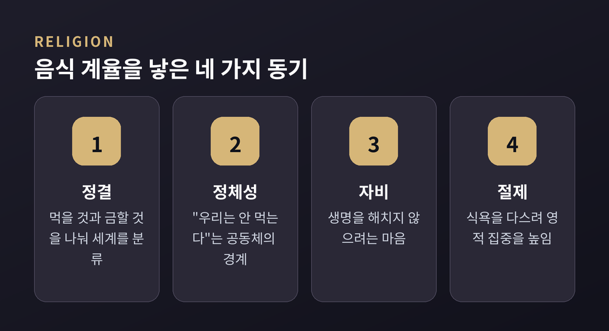
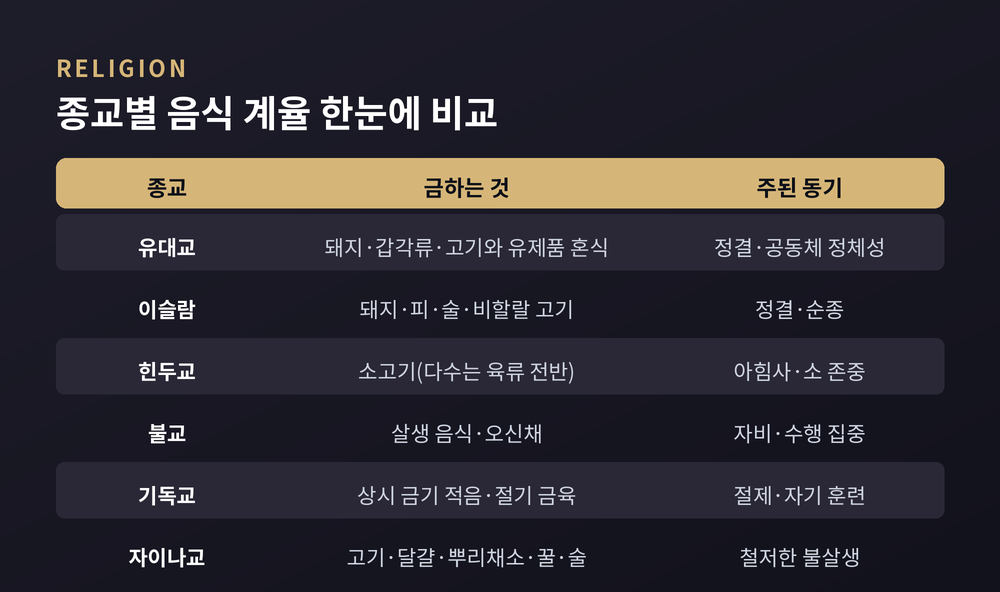
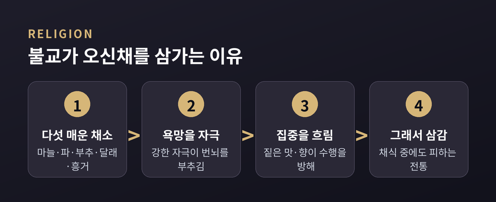

세계 종교의 음식 계율 비교 — 무엇을 먹고 무엇을 금하는가
이번 글에서는 세계 주요 종교의 음식 계율을 나란히 놓고 살펴보겠습니다. 무엇을 먹고 무엇을 금하는지, 그리고 그 규칙이 왜 생겼는지를 비교의 눈으로 짚어보려 합니다. 어느 신앙이 옳고 그른지를 가리려는 글은 아닙니다. 서로 다른 밥상 위에 담긴 서로 다른 세계관을 조용히 들여다보는 자리입니다.

음식 계율을 읽는 네 개의 열쇠
식탁은 단순히 배를 채우는 자리가 아닙니다. 종교에서 음식은 믿음과 윤리, 그리고 소속을 드러내는 하나의 언어입니다.
종교학에서는 음식 규범이 생겨난 동기를 크게 네 가지로 정리합니다. 첫째는 정결입니다. 먹어도 되는 것과 안 되는 것을 나누어 세계를 질서 있게 분류합니다. 둘째는 공동체의 정체성입니다. "우리는 이것을 먹지 않는다"는 말이 집단의 경계를 표시합니다. 셋째는 자비, 곧 생명을 해치지 않으려는 마음입니다. 넷째는 절제입니다. 식욕을 다스려 영적 집중을 높입니다.

문화인류학자 메리 더글러스는 이 물음을 깊이 파고든 사람입니다. 그는 레위기의 음식 금기를 단순한 위생 규칙이 아니라, 세계를 나누고 정리하는 상징의 체계로 읽었습니다. 몸에 무엇을 들이고 무엇을 내보내느냐에 관한 규칙이, 사실은 공동체의 경계를 지키려는 노력이라는 것입니다.
한 가지는 미리 일러두겠습니다. "왜 이런 계율이 생겼는가"에 대한 답은 학자마다 다릅니다. 위생설, 상징설, 정체성설, 윤리설이 나란히 서 있습니다. 그러니 아래의 설명도 하나의 정답이 아니라 여러 관점의 병렬로 읽어주시면 좋겠습니다.

유대교 — 코셔, 세계를 나누는 밥상
유대교의 음식법은 카슈루트라 부르고, 그 기준에 맞는 음식을 코셔라 합니다. 코셔는 히브리어로 "적합한", "알맞은"이라는 뜻입니다.
기준은 성서의 레위기 11장과 신명기 14장에 뿌리를 둡니다. 육상동물 중에서는 굽이 갈라지고 되새김질을 하는 짐승만 정결합니다. 소와 양, 염소가 여기에 듭니다. 돼지는 굽은 갈라졌으나 되새김질을 하지 않아 금지됩니다. 낙타와 토끼도 마찬가지입니다.
물속 생물에는 또 다른 잣대가 있습니다. 지느러미와 비늘을 함께 가진 물고기만 먹을 수 있습니다. 새우와 게, 랍스터 같은 갑각류, 조개와 오징어, 뱀장어는 이 조건을 갖추지 못해 상에 오르지 못합니다.
가장 독특한 규칙은 고기와 유제품을 함께 먹지 않는 것입니다. "새끼 염소를 그 어미의 젖에 삶지 말라"는 성서 구절을, 랍비 전통은 고기와 우유를 섞지 말라는 뜻으로 넓혔습니다. 같은 식사에서 섞지 않는 데 그치지 않습니다. 그릇과 수저, 심지어 식탁보까지 육류용과 유제품용을 따로 둡니다. 그래서 음식은 고기, 유제품, 그리고 어느 쪽과도 어울리는 중립인 파르베로 나뉩니다.
이슬람 — 할랄과 하람, 허용과 금지의 선
이슬람에서는 허용된 것을 할랄, 금지된 것을 하람이라 부릅니다. 음식만이 아니라 삶의 행위 전반을 가르는 개념입니다.
하람으로 분류되는 음식은 분명합니다. 돼지고기와 그 부산물, 피, 맹수의 고기, 규정대로 잡지 않은 고기, 그리고 술입니다. 돼지고기는 어떻게 조리하거나 가공해도 금지됩니다. 베이컨과 햄, 돼지에서 얻은 젤라틴까지 포함됩니다. 술도 종류를 가리지 않습니다. 와인과 맥주, 증류주는 물론 술로 조리한 음식까지 하람으로 봅니다.
고기를 얻는 방식에도 규칙이 있습니다. 다비하라 부르는 도축법입니다. 도축하기 전 신의 이름을 부르고, 목을 빠르게 그어 고통을 줄이며, 피를 충분히 빼냅니다. 도축하는 순간 동물이 살아 있고 건강해야 한다는 조건도 붙습니다. 규칙의 초점은 정결과 순종, 그리고 생명을 함부로 다루지 않는 태도에 놓여 있습니다.
힌두교 — 채식과 어머니 소
힌두교의 밥상을 이해하는 열쇠는 두 가지입니다. 아힘사, 곧 해치지 않음이라는 윤리와, 사트바라 부르는 순수함의 추구입니다.
다수의 정통 힌두교도는 락토 베지테리언의 길을 걷습니다. 고기와 생선, 달걀은 피하되 우유와 유제품은 받아들입니다. 신선한 과일과 채소, 견과와 통곡물, 콩류처럼 자연에 가깝고 가공이 덜 된 음식을 사트바 음식으로 여겨 가까이합니다.
소는 특별한 자리를 차지합니다. 힌두교도는 소를 어머니 소라 부르며 생명과 양육, 존엄의 상징으로 존중합니다. 그래서 소고기를 금하는 것은 힌두 음식법의 가장 뚜렷한 특징으로 꼽힙니다.
다만 채식이 모든 힌두교도에게 똑같이 강제되는 규범은 아닙니다. 경전과 전통은 채식을 강하게 권하지만, 지역과 공동체에 따라 실천의 정도가 다릅니다. 하나의 종교 안에도 여러 결이 있는 셈입니다.
불교 — 불살생과 오신채
불교의 음식은 첫 번째 계율인 불살생에서 출발합니다. 많은 불자가 이 계율에 따라 채식을 택하고, 살생이 개입되는 음식을 멀리합니다.
흥미로운 대목은 채식 안에도 또 하나의 금기가 있다는 점입니다. 오신채라 부르는 다섯 가지 매운 채소입니다. 대개 마늘과 파, 부추, 달래, 흥거를 가리킵니다. 채소인데도 피하는 이유가 있습니다. 강한 자극이 욕망과 번뇌를 부추기고, 짙은 맛과 향이 마음을 흔들어 명상과 수행의 집중을 흐트러뜨린다고 보기 때문입니다.
사찰음식은 이런 정신이 밥상 위에 구현된 모습입니다. 두부와 제철 채소, 곡물과 콩류, 해조류와 산나물로 소박하지만 정갈한 상을 차립니다. 고기와 생선은 물론, 오신채까지 삼가는 전통이 오랜 세월 이어져 왔습니다.
물론 채식이 모든 불교 전통에서 똑같이 의무인 것은 아닙니다. 채식을 강조하는 흐름이 있는가 하면, 탁발로 받은 음식을 가리지 않되 자기를 위해 잡은 고기는 피하는 방식도 있습니다.

기독교 — 자유, 그리고 절기의 절제
기독교는 앞선 종교들과 결이 조금 다릅니다. 대체로 특정 음식을 영구히 금하지 않습니다. 대신 절기와 요일 단위의 금식과 금육 전통이 발달했습니다.
동방 정교회에서 이 결이 가장 뚜렷합니다. 부활절 앞의 사십 일, 곧 대사순절이 가장 중요한 금식 기간입니다. 이 기간에는 고기와 유제품, 생선과 술, 기름을 절제하고 기도와 성찰, 회개에 마음을 모읍니다. 나아가 연중 매주 수요일과 금요일에도 금식을 지킵니다. 각각 유다의 배신과 십자가의 수난을 기억하는 날입니다.
서방 교회에도 비슷한 흐름이 있습니다. 예수가 광야에서 사십 일을 금식한 일을 기려, 사순절 동안 절제를 지킵니다.
여기서 음식은 부정한 것이 아닙니다. 오히려 절제라는 훈련의 도구입니다.
잠시 내려놓음으로써 자기를 다스리고, 타인의 배고픔에 공감하며, 기도에 더 깊이 머무는 것입니다.
자이나교 — 가장 멀리 나아간 불살생
자이나교는 불살생을 가장 끝까지 밀고 나간 종교로 꼽힙니다. 인도에서 가장 엄격한 종교적 채식이 여기에 있습니다.
자이나교도는 작은 곤충 하나를 죽이는 일조차 해로운 업을 낳는다고 봅니다. 그래서 고기와 생선, 달걀은 물론 뿌리채소까지 금합니다. 감자와 양파, 마늘이 여기에 듭니다. 이유가 인상적입니다. 뿌리 하나에 무수한 미생물이 깃들어 있어, 뿌리를 뽑는 순간 그 생명들이 한꺼번에 스러진다고 여기기 때문입니다. 꿀과 술, 여러 발효식품도 같은 이유로 삼갑니다.
실천의 강도에는 층이 있습니다. 출가한 수행자는 큰 서약을 지고 한 감각의 생명까지 최소한으로 해치려 애씁니다. 재가자는 조금 더 유연한 서약 아래, 주로 감각이 여럿인 동물을 해치지 않는 데 집중합니다. 그러면서도 곡물과 콩류, 지상의 채소와 과일에 우유와 유제품을 더해 상을 차립니다.
정리하면 이렇습니다. 여섯 종교의 밥상은 저마다 다른 방향을 바라봅니다. 유대교와 이슬람에서는 정결과 분류, 그리고 공동체의 경계가 앞에 섭니다. 힌두교와 불교, 자이나교에서는 생명을 해치지 않으려는 자비가 축을 이룹니다. 기독교는 평소의 자유 위에 절기의 절제를 얹습니다.
그러나 다름의 밑에는 하나의 공통점이 흐릅니다. — 음식은 결코 단순한 끼니가 아니라, 그 공동체가 세계를 어떻게 바라보는지를 담아낸 언어라는 사실입니다.
무엇을 먹지 않느냐는 물음은 결국 무엇을 소중히 여기느냐는 물음과 맞닿아 있는지도 모릅니다.